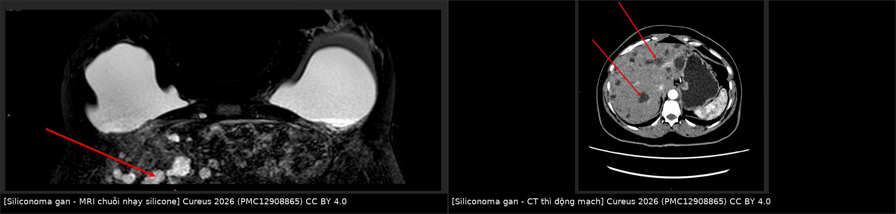
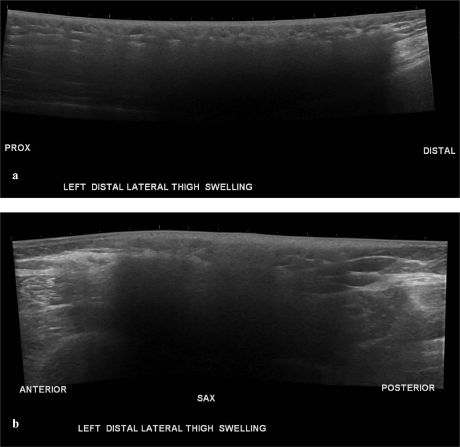
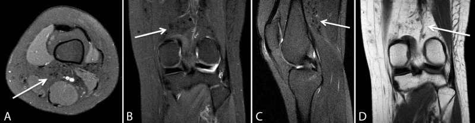

1688 — Siliconoma lan xa ngoài vùng vú & silicone tự do sau tiêm / Distant siliconoma and free-silicone migration
Tags: pattern:snowstorm pattern:khoi-mo-mem vung:vu vung:thanh-nguc vung:bung vung:chi-duoi vung:gan protocol:sieu-am-mo-mem protocol:MRI-chi-hien-silicone incidentaloma:siliconoma
Mức chắc chắn (certainty): tổng hợp y văn (literature synthesis) — ghép 1 ca nguyên văn siliconoma đùi–gối sau tiêm mông (Soliman SB, Radiol Case Rep 2023, PMC9829554, CC BY-NC-ND), 1 ca nguyên văn di chuyển tới khớp gối (Leyva A và cs, Cureus 2018, PMC6235646, CC BY 4.0), 1 ca nguyên văn siliconoma GAN sau vỡ vỏ implant (Win M và cs, Cureus 2026, PMC12908865, CC BY 4.0), 1 đoàn hệ 72 bệnh nhân chất làm đầy vĩnh viễn vùng mông (Decates TS và cs, Plast Reconstr Surg Glob Open 2025, PMC12144638, CC BY-NC-ND), 1 tổng quan scoping 142 bài về tiêm silicone công nghiệp (Gerk A và cs, Acta Cir Bras 2024, PMC11457952, CC BY 4.0) và 1 nghiên cứu 77 người chuyển giới nam→nữ tiêm silicone số lượng lớn (Bertin C và cs, Medicine 2019, PMC6358378, CC BY-NC). Bài 1686 đã phủ hạch chứa silicone; bài này đi sâu silicone đã rời khỏi vùng tiêm/vỏ implant và gây khối ở nơi khác, nơi nó thường bị gọi nhầm là sarcoma hoặc di căn.
1. Tổng quan bệnh học – cơ chế hình ảnh
- Bản chất: silicone lỏng dùng trong thẩm mỹ là polydimethylsiloxane (PDMS). Ở Mỹ, tiêm silicone số lượng lớn để độn mông/vú bị FDA cấm; chỉ còn được phép dùng trong nhãn khoa (bơm dầu trong bong võng mạc) — mọi ca "độn mông bằng silicone" là thủ thuật ngoài luồng (PMC6235646).
- Vì sao vẫn phổ biến: giá thành tiêm silicone lậu chỉ bằng 10–30% một ca đặt implant mông hợp pháp, và một bộ phận người chuyển giới nữ hóa chọn biện pháp này vì rào cản chi phí/kỳ thị (PMC9829554).
- Dịch tễ (số nằm lòng):
- Tổng quan scoping 142 bài, 28 quốc gia: vùng tiêm hay gặp nhất là mông 35%, vú 13,3%; biến chứng được báo cáo: u hạt 41,5%, vấn đề da 41,5%, nhiễm trùng 35,9%, biến chứng phổi 34,5%; 49,9% là nữ chuyển giới, 40,8% là nữ cisgender (PMC11457952).
- Đoàn hệ 77 người chuyển giới nam→nữ tiêm trung bình 4 L (0,5–15 L): di chuyển silicone 59%, viêm 50%, giãn tĩnh mạch 39%, tăng sắc tố sau viêm 20%, nhiễm trùng 14%, áp-xe 4%; 100% có không bào silicone trong bạch cầu đơn nhân trên tiêu bản máu — bằng chứng silicone lưu hành toàn thân mạn tính (PMC6358378).
- Đoàn hệ 72 bệnh nhân (69 nữ, 3 nam; tuổi trung bình 39) sau độn mông/hông bằng chất vĩnh viễn: biến chứng thường gặp nhất là viêm mô dưới da (panniculitis); 36/42 người trả lời có giảm đau (PMC12144638).
- Cơ chế di chuyển (4 đường, quyết định vị trí khối):
- Theo mặt phẳng dưới da/mạc cân + trọng lực: silicone chảy xuống dưới dọc theo đùi → khối ở đùi xa, khoeo, cẳng chân; đây là đường hay gặp nhất của "siliconoma lan xa" (PMC9829554, PMC6235646).
- Theo dây chằng/khe giải phẫu: từ mông qua dây chằng bẹn vào môi lớn hai bên (PMC12390852); qua lỗ trocar ra thành bụng sau mổ nội soi (PMC8515398).
- Đường bạch huyết: tới hạch nách, hạch trung thất trong, hạch bẹn (bài 1686).
- Đường máu: tới gan, lách, phổi — hiếm nhưng là nơi dễ bị gọi nhầm nhất là di căn (PMC12908865).
- Vì sao tiềm tàng 5–30 năm: silicone không phân hủy; đại thực bào bắt giọt silicone, hợp bào hóa thành tế bào khổng lồ đa nhân, bao quanh bằng xơ → khối u hạt dị vật (foreign-body granuloma) lớn dần rất chậm. Bài gốc ghi khoảng 5–30 năm từ lúc tiêm đến lúc có triệu chứng (PMC9829554); các ca đơn lẻ: 11 năm (PMC10513289), 15 năm (PMC12390852), 25 năm với loét chân hoại tử (PMC6195932).
- TẠI SAO siêu âm thấy "bão tuyết": tốc độ âm trong silicone chỉ ≈ 1.000–1.100 m/s so với ≈ 1.540 m/s của mô mềm; chênh trở kháng âm ở mặt phân cách silicone–mô rất lớn → hồi âm mạnh không đều + suy giảm chùm tia phía sau ("bóng lưng bẩn"), các giọt nhỏ phản xạ lặp lại tạo hình "bão tuyết" và che mờ mô phía dưới (PMC9829554, PMC6195932).
- TẠI SAO MRI là chìa khóa nhưng ảnh thường "nghèo": tùy độ nhớt và độ tinh khiết, silicone điển hình đẳng–giảm tín hiệu trên cả T1 và T2; silicone ít nhớt có thể tăng tín hiệu trên T2. Chuỗi chỉ hiện silicone ("silicone-only") dùng ức chế mỡ kiểu STIR + ức chế tín hiệu nước chọn tần số, nên chỉ còn proton của silicone → các ổ silicone sáng rực (PMC9829554). Hệ quả: trên ảnh thường khối giống mô xơ/u đặc; chỉ chuỗi chuyên biệt mới chứng minh được silicone.
- TẠI SAO CT dễ bị đọc thành u đặc: silicone có đậm độ mô mềm hoặc hơi tăng đậm, kèm phù dưới da, dải xơ và dày da quanh đó; không phải đậm độ mỡ nên không được gọi là lipoma (PMC9829554). Lưu ý trung thực: bài gốc không đưa ngưỡng HU cụ thể — dùng so sánh tương đối với mỡ/cơ, chưa có ngưỡng HU chuẩn hóa (chưa rõ — cần tra).
- Vì sao PET dương giả: đại thực bào/tế bào khổng lồ trong u hạt tăng chuyển hóa glucose. Ca 59 tuổi có ung thư vú đa ổ SUVmax 15,0, hạch di căn 6,7, di căn xương 7,6, trong khi ổ silicone ở mông–dây chằng bẹn–môi lớn có SUVmax 7,0 — chồng lấp hoàn toàn với hạch di căn (PMC12390852).
2. Mẫu hình + chẩn đoán phân biệt theo vị trí (gamut)
- Đùi xa – khoeo – cẳng chân (dưới nơi tiêm mông): khối dưới da chắc, đau, da phù nhẹ, tiến triển nhiều tháng–nhiều năm; siêu âm bão tuyết, MRI khối đẳng–giảm T1/T2 trong mỡ dưới da, không ngấm đáng kể. Đây là vị trí dễ bị chẩn đoán sarcoma phần mềm nhất (PMC9829554: bệnh nhân được hội chẩn ung thư cơ xương và sinh thiết dưới siêu âm mới chốt; PMC6235646: khối ở khoeo và mặt sau đùi, lan tới khớp gối).
- Thành ngực/vú (nơi tiêm hoặc vỡ vỏ implant): nhiều ổ silicone trong mô tuyến/dưới da, có thể vôi hóa viền sau nhiều năm; phân biệt u hạt do vỡ implant (dấu "linguine"), tái phát u, hoại tử mỡ (bài 1687).
- Thành bụng (sau mổ nội soi/transabdominoplasty): silicone từ implant vỡ theo đường trocar ra thành bụng → khối/nốt dọc lỗ trocar nhiều năm sau mổ; ca 69 tuổi có silicone rỉ ra từ các lỗ trocar khi rút trocar, dù các lỗ đều dưới bờ sườn (PMC8515398).
- Tiểu khung – môi lớn – bẹn: silicone từ mông theo dây chằng bẹn → môi lớn hai bên; trên PET là ổ FDG nhẹ, dễ bị gọi là hạch chậu di căn (PMC12390852).
- Gan (và lách): tổn thương giảm đậm độ, nhiều ổ, bờ không đều trên CT thì động mạch; trên MRI là ổ chứa silicone (sáng trên chuỗi nhạy silicone). Y văn mới có 5 ca (bài này + 4 ca trước, đều sau vỡ implant); 3/4 ca trước không cần điều trị (PMC12908865). Đây là kẻ bắt chước di căn gan điển hình.
- Hạch vùng: xem bài 1686 (SLA 5,83%; "snowstorm" Se 87,5%/Sp 100%).
- Phổi: phân biệt siliconoma mạn (không triệu chứng, tổn thương xơ hóa) với hội chứng tắc mạch silicone (silicone embolism syndrome, SES) — cấp tính sau tiêm, sốt–khó thở–ho máu–co giật, có ca tử vong (PMC11166068); SES là cấp cứu, không phải khối u hạt mạn.
3. Bảng so sánh phân biệt (ma trận đối chiếu)
| Thực thể (entity) | Hình ảnh điển hình (US/CT/MRI) | Chốt vào (rule-in) | Chốt loại (rule-out) | Gợi ý xác nhận |
|---|---|---|---|---|
| Siliconoma sau tiêm tự do | US: "bão tuyết" hồi âm mạnh + bóng lưng bẩn; CT: đậm độ mô mềm, phù/dải xơ quanh; MRI: đẳng–giảm T1/T2, sáng trên chuỗi chỉ hiện silicone | Bão tuyết + sáng trên chuỗi chỉ hiện silicone, phân bố theo trọng lực/mặt phẳng cân dưới nơi tiêm, tiền sử tiêm nhiều năm | Khối ngấm thuốc mạnh, hoại tử trung tâm, xâm lấn cân sâu → nghĩ sarcoma; không có tín hiệu silicone | Hỏi tiền sử tiêm (nhiều lần bệnh nhân giấu); US + MRI chuỗi silicone |
| Siliconoma do vỡ vỏ implant | Ổ silicone quanh implant ± xa; MRI có linguine sign, silicone ngoài bao | Dấu linguine/inverted loop + silicone ngoài vỏ + ổ xa (gan/lách/hạch) | Vỏ implant nguyên vẹn, không silicone ngoài bao → không phải nguồn | MRI vú có chuỗi silicone; đối chiếu ảnh cũ |
| Sarcoma mô mềm | Khối > 5 cm, sâu dưới cân, không đồng nhất, hoại tử, ngấm thuốc không đều, hạn chế khuếch tán | Tăng sinh nhanh, xâm lấn cân/cơ, hoại tử, DWI tối – ADC thấp | Bão tuyết + chuỗi silicone dương → không phải sarcoma | MRI + sinh thiết core có hóa mô miễn dịch |
| Di căn mô mềm/hạch | Nhiều nốt, FDG mạnh, hạch to, có ung thư nguyên phát | Nhiều ổ + FDG cao + hạch > 1 cm, mất rốn mỡ | SUVmax 7,0 của ổ silicone trùng lấp với hạch 6,7 → một mình PET không loại trừ/không chốt | Đối chiếu MRI, sinh thiết hạch nghi ngờ |
| Áp-xe/nhiễm khuẩn | Ổ dịch có viền ngấm thuốc, khí trong ổ, phù mô mềm nhiều, sốt | Sốt + đau cấp + ổ dịch viền ngấm + cấy dương | Đau mạn nhiều năm, không sốt, không ổ dịch → không phải áp-xe thuần | Siêu âm/CT, cấy dịch, kháng sinh |
| Chất làm đầy khác (PMMA, polyacrylamide) | PMMA: hạt tăng đậm/vôi hóa; polyacrylamide: dịch T2 rất sáng, di chuyển theo mô; HA: tự tiêu theo tháng | Tiền sử chất cụ thể + hình thái đặc trưng của chất đó | Không sáng trên chuỗi chỉ hiện silicone | Hỏi loại chất, hồ sơ thủ thuật; MRI |
| Hoại tử mỡ/nang dầu | Nang T1 sáng, T2 sáng, viền mỏng, tắt tín hiệu trên fat-sat, có thể vôi hóa viền | Tín hiệu mỡ thật (tắt trên fat-sat) + viền mỏng | Không tắt trên fat-sat, sáng trên chuỗi silicone → silicone | MRI fat-sat; theo dõi (bài 1687) |

Trái: ổ tăng tín hiệu trong gan trên MRI (chuỗi nhạy silicone). Phải: các ổ giảm đậm độ bờ không đều trên CT thì động mạch — trông như di căn gan. Nguồn: Win M và cs, Cureus 2026 (PMC12908865), CC BY 4.0; ảnh ghép letterbox củatools/make_composite.py.
4. Protocol chụp + hệ phân độ/điểm chuẩn hóa
- Siêu âm (đầu tay): đầu dò linear 12–18 MHz, chế độ panoramic/extended field-of-view cho tổn thương dài; ghi kích thước 3 chiều (cm), độ sâu, có/không phù da; mô tả "bão tuyết" + bóng lưng bẩn. Cảnh báo: vùng bóng lưng che mờ tổn thương thứ hai — phải quét lân cận và đối bên.
- MRI (chốt bản chất): 1,5 T hoặc 3 T; T1W, T2W, T2W fat-sat/STIR, DWI (b = 800–1.000), T1W sau gadolinium fat-sat, và chuỗi chỉ hiện silicone (silicone-only) khi nghi silicone. Chuỗi này cần cài đúng tần số trung tâm của silicone và ức chế nước chọn tần số — nếu cài sai, ổ silicone sẽ mất tín hiệu và bị đọc là xơ.
- CT: lát mỏng 1–2 mm, cửa sổ mô mềm, trước và sau cản quang; đo đậm độ tương đối so với mỡ và cơ; tìm dày da, dải xơ, phù dưới da và vôi hóa (vôi hóa xuất hiện muộn, không loại trừ silicone).
- PET/CT: không dùng một mình để phân biệt siliconoma với di căn — ổ silicone có SUVmax tới 7,0 trong khi hạch di căn 6,7; nếu cần theo dõi ung thư, ưu tiên MRI vú có DWI + chuỗi silicone (PMC12390852).
- Sinh thiết: chỉ khi không loại được sarcoma/di căn hoặc cần cấy khi nghi nhiễm; dùng core needle 14–16 G, tránh vùng da loét; mô học: không bào trống, đại thực bào, tế bào khổng lồ đa nhân, xơ. Không chọc hút/dẫn lưu mù một "áp-xe" không có sốt vì có thể tạo đường rò silicone mạn.
- Xử trí (khung quyết định):
flowchart TD
A[Khối mô mềm xa vùng tiêm hoặc vỏ implant] --> B[Siêu âm tìm dấu bão tuyết]
B -->|Có| C[MRI có chuỗi chỉ hiện silicone]
B -->|Không| D[Nghĩ u mô mềm hoặc di căn: MRI và sinh thiết]
C --> E{Có triệu chứng hoặc còn nghi ác tính?}
E -->|Không| F[Theo dõi lâm sàng và siêu âm định kỳ]
E -->|Có| G[Đa chuyên khoa: laser trong tổn thương, phẫu thuật từng đợt, kháng sinh nếu nhiễm]
- Số liệu xử trí: đoàn hệ 72 bệnh nhân — 36/42 giảm đau; laser trong tổn thương (intralesional laser treatment, ILT) gắn với mềm nốt: OR 20,25 (PMC12144638). Phẫu thuật thường nhiều đợt vì silicone thấm lan không có vỏ rõ; ca 31 tuổi sau 11 năm phải nhiều lần mổ mới hết tái phát (PMC10513289). Siliconoma gan không triệu chứng: chỉ theo dõi, không cần điều trị (PMC12908865).
- Không có hệ phân độ chuẩn hóa cho siliconoma (không có RADS); phân tầng thực hành dựa trên vị trí – kích thước – triệu chứng – nguy cơ ác tính, không dựa vào một thang điểm.
5. Biến thể bình thường và cạm bẫy
- Bệnh nhân thường KHÔNG khai tiền sử — vì sợ kỳ thị/pháp lý. Khối xuất hiện xa cả về vị trí lẫn thời gian (5–30 năm) nên không ai nghĩ tới. Đây là lý do số 1 khiến ca bị chẩn đoán sarcoma và mổ oan (PMC9829554).
- Cạm bẫy "bão tuyết" che khuất: bóng lưng bẩn làm mờ mô phía sau → bỏ sót tổn thương thứ hai hoặc hạch bên dưới (satisfaction of search). Luôn quét rộng và đối chiếu MRI.
- Đọc MRI theo phản xạ "sáng = máu/mỡ": silicone không tắt trên fat-sat và có thể sáng trên T2 nếu ít nhớt; đừng gọi là máu bán cấp hay nang dầu khi chưa chạy chuỗi chỉ hiện silicone (PMC9829554).
- CT: "đậm độ mô mềm" ≠ mỡ: khối silicone không phải lipoma; nếu chỉ đo HU thấy quanh 0–40 HU càng dễ nhầm u đặc. Bối cảnh (nhiều ổ, dưới da, theo đường trọng lực) quan trọng hơn một con số.
- PET dương giả: hạch/ổ silicone bắt FDG; đừng nâng giai đoạn ung thư chỉ vì hạch bắt xạ khi bệnh nhân có tiêm silicone — sinh thiết hạch mới quyết định (PMC12390852).
- Chọc/dẫn lưu "áp-xe" không sốt: dịch silicone không tự lành; dẫn lưu có thể để lại đường rò và loét mạn. Chỉ can thiệp khi có bằng chứng nhiễm hoặc chèn ép.
- Phân biệt với cấp cứu: khó thở–sốt–co giật–xuất huyết trong vài giờ đến vài ngày sau tiêm là SES, không phải siliconoma; SES có tử vong (ca 28 tuổi tử vong sau tiêm mông) (PMC11166068). Siliconoma mạn tính không gây suy hô hấp cấp.
- Tăng canxi do u hạt silicone đã được báo cáo (bài 1686: canxi 3,32 mmol/L, PTH bị ức chế) — khi gặp tăng canxi không rõ nguyên nhân, hỏi tiền sử silicone.
- Loét mạn trên nền silicone có thể bị nhiễm và hiếm khi ung thư biểu mô vảy phát triển trên nền viêm mạn — không được theo dõi vô hạn một vết loét không lành.
6. Tự lượng giá — Blind Quiz
Ca 1 — 35 tuổi, nữ chuyển giới, đau và khối chắc mặt ngoài–xa đùi trái 6 tháng, không sốt, không chấn thương. Trước khi xem đáp án, hãy mô tả siêu âm.

- Hỏi: (1) Dấu hiệu siêu âm chính là gì? (2) Nó che lấp gì? (3) Ba chẩn đoán phân biệt và xét nghiệm chốt?
Bấm để hiện đáp án (findings + chẩn đoán)
- Findings: vùng hồi âm mạnh không đều, có bóng lưng bẩn, che mờ mô dưới — dấu "bão tuyết" (snowstorm) của silicone tự do trong mô dưới da; kèm dày da/phù nhẹ quanh đó.
- Chẩn đoán: siliconoma do silicone tiêm tự do di chuyển xuống đùi xa nhiều năm sau độn mông. Ba phân biệt: sarcoma mô mềm, di căn mô mềm, áp-xe/viêm mô tế bào. Chốt: MRI có chuỗi chỉ hiện silicone (ổ sáng rực) ± sinh thiết core khi còn nghi ác tính. Ca gốc đã được hội chẩn ung thư cơ xương và sinh thiết dưới siêu âm mới chốt.
- Nguồn ảnh: Soliman SB, Radiol Case Rep 2023, Fig. 1, PMC9829554, CC BY-NC-ND 4.0 (nguyên bản, không chỉnh sửa).
Ca 2 — 28 tuổi, nữ, đau gối trái; tiền sử tiêm mông và ngực nhiều năm trước. MRI gối có các nốt nhỏ sau khoeo. Nhìn ảnh, mô tả tín hiệu và nghĩ tới đường lan nào.

- Hỏi: (1) Các nốt nằm ở khoang nào? (2) Tín hiệu ra sao? (3) Vì sao silicone từ mông tới được gối?
Bấm để hiện đáp án (findings + chẩn đoán)
- Findings: nhiều nốt nhỏ, bờ rõ trong mô dưới da mặt sau đùi xa và khoeo, giảm tín hiệu trên PD, T1 và T2 (mũi tên) — không phải mỡ, không phải máu.
- Chẩn đoán: silicone tự do di chuyển theo trục giải phẫu xuống khớp gối, kèm u hạt phản ứng. Đường lan: mặt phẳng dưới da/mạc cân + trọng lực và vận động cơ (không phải di căn theo đường bạch huyết). CT ngực của cùng bệnh nhân cho thấy ổ silicone trong hai vú và thành ngực — bằng chứng đa ổ.
- Nguồn ảnh: Leyva A và cs, Cureus 2018, Fig. 3, PMC6235646, CC BY 4.0.
Ca 3 — 53 tuổi, nữ, sưng đau vú trái 4 tuần, có đặt implant silicone hai bên từ trước. MRI vú phát hiện vỡ bao và tình cờ thấy tổn thương gan. Nhìn ảnh ghép, mô tả gan trước khi kết luận.
- Hỏi: (1) Mô tả tổn thương gan trên hai modality? (2) Chẩn đoán phân biệt bắt buộc? (3) Có cần sinh thiết gan không?
Bấm để hiện đáp án (findings + chẩn đoán)
- Findings: nhiều ổ tăng tín hiệu trong gan trên MRI (chuỗi nhạy silicone) và giảm đậm độ, bờ không đều trên CT thì động mạch — hình ảnh giống di căn gan.
- Chẩn đoán: siliconoma gan do silicone từ implant vỡ lan theo đường máu. Phân biệt: di căn gan, nang/hemangioma không điển hình, áp-xe. Bệnh nhân không triệu chứng về gan → không sinh thiết, không điều trị, chỉ theo dõi; đây là ca thứ 5 trong y văn, 3/4 ca trước cũng không cần điều trị.
- Nguồn ảnh: Win M và cs, Cureus 2026, Fig. 7 + Fig. 8, PMC12908865, CC BY 4.0 (ảnh ghép letterbox).
Bài liên quan chéo
- 1686 – Hạch chứa silicone & siliconoma: snowstorm, phân bố hạch, PET dương giả
- 1656 – Rách vỏ implant ngực & gel bleed: dấu linguine, MRI chuỗi silicone
- 1687 – Hoại tử mỡ sau tái tạo vú: nang dầu, vôi hóa viền, không ngấm thuốc
- 375 – U phần mềm: tiếp cận khối mô mềm, ngưỡng kích thước & sinh thiết
- 331 – U ác xương người lớn: phân biệt sarcoma xương–mô mềm
- 121 – Khối gan theo LI-RADS: bắt thuốc động mạch, thải thuốc, phân biệt di căn
- 500 – Tổng quan Vú & Sản phụ khoa
Ảnh
- 6 ảnh nguồn + 1 ảnh ghép; nguồn, giấy phép và phái sinh từng ảnh ghi trong
images/CREDITS.mdvàsources.md. - Ảnh CC BY-NC-ND (PMC9829554) dùng nguyên bản, không crop/ghép; ảnh ghép chỉ dùng ảnh CC BY cùng một bài (PMC12908865).
Không dùng để chẩn đoán độc lập khi chưa có người hướng dẫn.